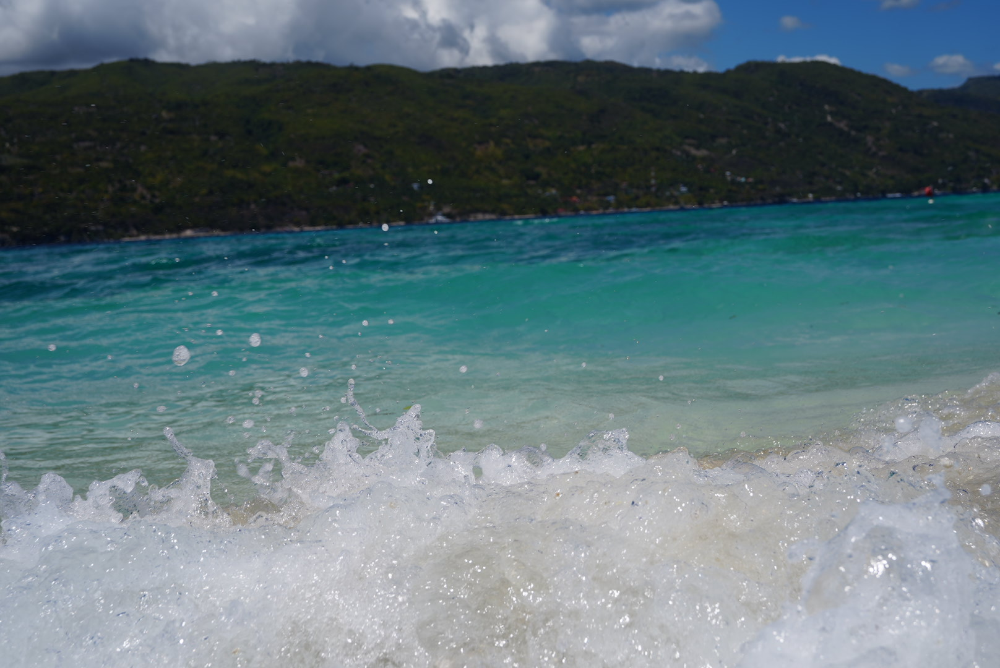

PROFILE

名前
加地良寅(かじりょういん)
趣味みたいなものは？
バドミントン
長所みたいなのはどんなところ？
運動してる
ちょこっとだけ自慢できることは？
パソコン結構得意
最近ハマっているものは？
長時間電話
最近ものすごく美味い！と思ったのはなに？
牛タン
ちょっと嫌いな食べ物は？
豆類
まず家に帰ってすることはなに？
靴下を脱ぐ
その次にすることは？
足を洗う
朝、出かける何時間前に起きる？
0.5から1時間
何フェチ？
くびれ
えらそうな座右の銘は？
諸突猛進
10年後なにしてる？
ずっと遊んでいたい
とりあえず集めてるものは？
服
体を流れている血の液体の型は？
O型
この学校でしっかり勉強しておきたいものをベスト３
資格
JS
php
できれば将来就きたい職業ベスト３
エンジニア
ソフトウェア開発
マーケティング職
この４年間の学校生活でやってみたいことを３つ
セキュリティスペシャリストまで取る
自分の家にデータベースを構築する
世界一周留学
copyright 加地良寅 all rights reserved.